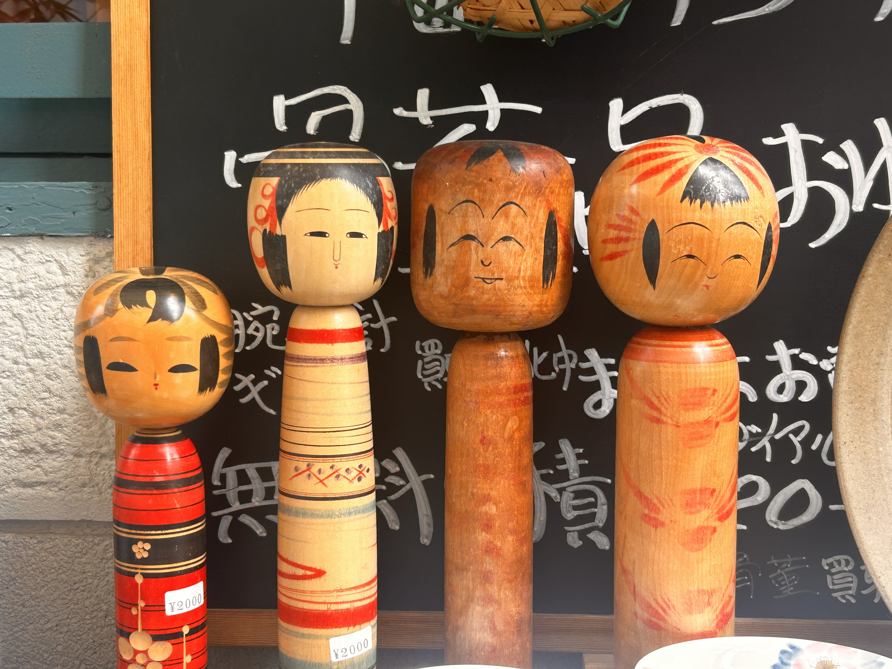

VIVA LA VIDA
2026.04.13
Hello, blog. Today marks a week’s worth of posts! Wow, I never thought I’d make it this far. JK, I’m gonna be doing this for years and years until my fingers get arthritis.
Anyway, as I said, I went to Osaka castle yesterday and let me tell you, it was quite the journey.
WALK WALK WALK
First, I decided to walk there which took an hour. Half of the walk was spent along one of the branches of the Yodo River. It was a very green and pretty trail. It reminded me of where anime characters confess their love. There were so many people picnicing. So many children playing. There was even little meerkats standing on their legs. I think I took the 100% Japanese route because, boy, was I a real sore thumb. So much so that this old man whipped out his camera and began recording me. I knew he was because I looked directly at him and it was like in a video game where an NPC’s head revolves to look directly at you. He was turning his camera towards me just like that.
My initial thought was: ‘is this guy recording me?’ Then, I turned toward him and looked directly at the lens in an confused state. Next, I was annoyed. Who records people so obviously? At least make it seem like you’re doing something else like swiping through your medication app. Nope. This old man really made me feel like a zoo animal which is not okay because I’m more of a traveling circus. If you’re gonna take a picture of me, by common courtesy you should give me some moolah. Another nope. He didn’t even give me money nor a “thanks for being so different and weird.” Tsk… This is probably how the meerkats felt.
But the final stage I went through was acceptance. I can’t blame him. My family does the same taking pictures of random people. I knew he just wanted to show his grandchildren or whomever that he witnessed the lone blasian roaming around the Yodo River trails, or he’s posting it on his Facebook with the caption “ANOTHER FORIGNER CREATING CHAOS!!!”
TASTE OF HOME
After that incident, I continued my walk and you know how I mentioned I took the 100% Japanese route? Well, make that 99.50% because I encountered two white women. Not only white women, but suburban mothers. For me, this was the equivalence of finding a fairy fountain in Ocarina of Time (where you heal to full health).
They were in their 40’s. They had on purple leggings and were doing that kind of speed walking thing that they do. They gossiped in their midwestern accents like “I was telling him that he needs tuh clean his gosh darned room, and then he slammed the door! Cheryll. Isn’t that just so rude of Jimmy?”
What I think actually happened was they were walking around their neighborhood in Peoria then passed into a portal to Osaka. Anyway, I wanted to follow these women to the ends of the earth but I had to depart from them when I reached the castle.
DA CASTLE!
I made a little movie:
If you notice, there was this couple I followed for like 30 minutes, and it looked like I was recording them the entire time. Lol. The song is “Young Adult” by Ritt Momney. My cousin went to his concert at the same time as I was walking, so I listened to this song a lot on the way there. When I got back, I learned that she got her shoes signed by him! Crazy stuff!
The castle was smaller in real life than I thought. I watched some guy do some handstand with foam blocks. It was cool.
After he did the performance and asked for money, I walked up to him and felt like a baby. He said to me “Awww.. is this for us?”
I nodded.
“Thank you! Put it right over there!” I stumbled to where he pointed his finger.
The girl holding the hat for money said “Arigato!”
I said “A-ahwigato gozamus,” then ran away.
CHEESECAKE!
I walked to the Rikuro’s Cheesecake. Rikuro Cheesecake is this place that sells an infamous “jiggly cheesecake.” Look it up. It was underground and I couldn’t find it for the longest time until I did. It had the biggest line ever. I waited about 30 minutes. It was worth it though since it was only $6.44 and it’s really tasty. I tried capturing the amount of jiggle, but it ended up looking like a video a creep would make:
When I got back, I ate like half of it with a pint of milk and watched skins.
SKINS
Okay, I have to talk about skins a little bit. Skins doesn’t make sense sometimes because why is it that this Ugandan guy and weird girl are crying over each other even though they’ve been together for a week? That is so stupid to me.
If you don't know what I'm talking about, go watch the show on Hulu. I'll give you my login and everything, just go watch it unless you're under the age of 16.
Okay, I’m tired of writing now. Thank you so much for reading! I am really enjoying blogging! See you tomorrow! I hope I eat something new and delicious today. じゃね！
